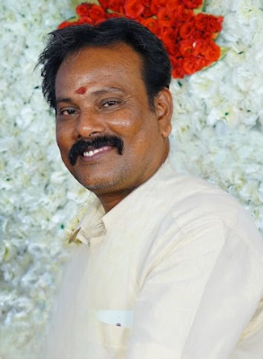

🪵 Our Story
Amudha Modern Kitchen and Modern Cupboard Works Since 1992 | Chennai
Founded by **Mr. Saravanan**, a visionary craftsman with a passion for elegant interiors and durable design, Amudha Modern Kitchen and Modern Cupboard Works has been transforming homes across Chennai since **1992**.
What began as a humble workshop has grown into a trusted brand for custom wooden furniture and modular kitchen solutions. With decades of experience and a deep understanding of local tastes, Saravanan and his team deliver furniture that blends tradition with modernity — all crafted with precision and care.
👋 Your Trusted Partner For:
- ✔️ **Wood Doors** – Strong, stylish, and built to last
- ✔️ **Beds** – Comfort meets craftsmanship
- ✔️ **Dining Tables** – Designed for family moments
- ✔️ **Modular Kitchens** – Smart layouts, sleek finishes, and space-saving solutions
We don’t just build furniture — we build trust. Every piece is a reflection of your vision, brought to life with superior materials and timeless design.
Welcome to Amudha — where your dream interiors begin.